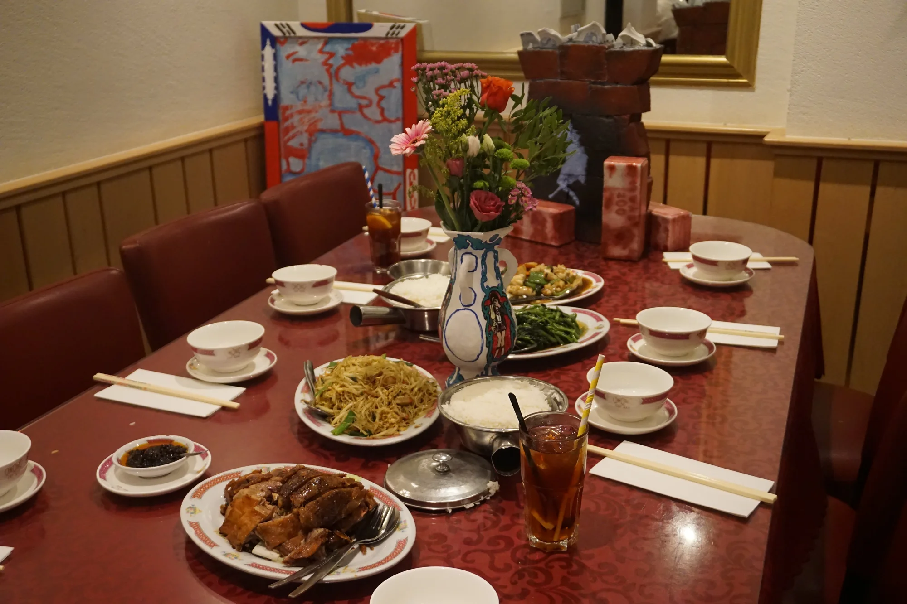
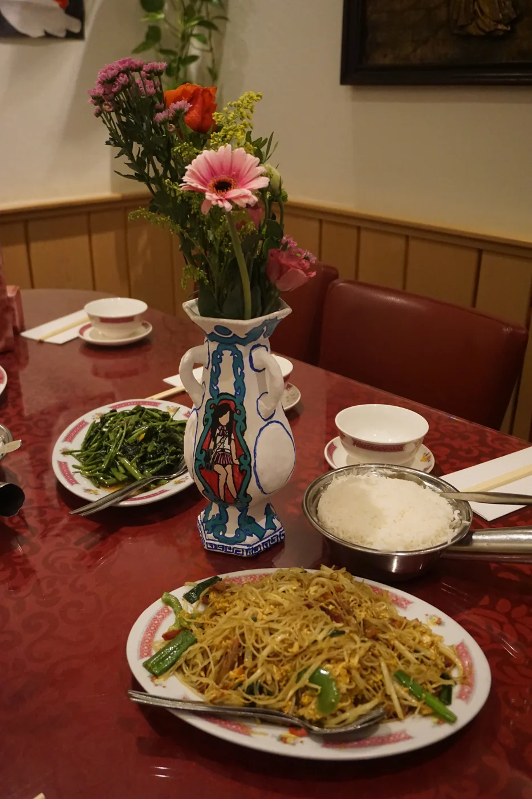

Fat Kee guerrilla
 
Off-site guerrilla exhibition in Fat Kee, Den Haag Chinatown. A respond to my own cultural heritage. I see making foreign (sino-aesthetic) works like running a Chinese restaurant on foreign land.
Selected works
Home